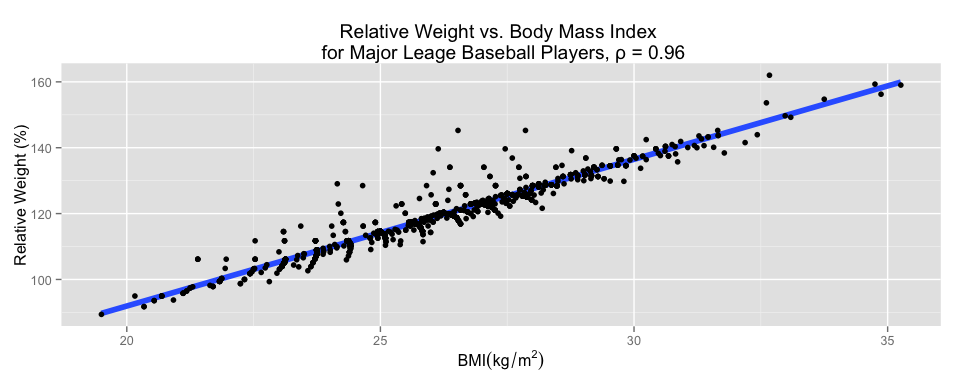

Vignette: Spurious Correlation
library(knitr)
library(ggplot2)
library(xtable)
library(gridExtra)
library(pander)
opts_knit$set(fig.width = 10,
xtable.type = 'html',
warning = FALSE,
cache = TRUE,
dev = 'png')
options(xtable.comment = FALSE)
panderOptions('table.split.table', Inf)Overview
The purpose of this short note is to explore spurious correlation. There are two common uses of the phrase spurious correlation, which are referred to here as Type I and Type II.
Type I
Most often the phrase refers to the appearance of a strong relationship between two variables to which no shared causal driver can be reasonably proposed. These apparent relationships arise as a natural consequence of looking for relationships across many variables, especially when sub-setting.
Example - Sunspots
A popular example is the correlation between sunspot activity and the number of Republicans in the U.S. Senate observed between 1960 and 1980. Proposing a shared causal driver here is a tenuous undertaking. It is more reasonable to propose that the two highly oscillatory series came into sync for about two decades by chance, before diverging again. The graphs below show how the choice of data subset has dramatic consequences on the cross-correlation of the series.
sunspots <- read.csv('data/sunspots.csv')
republicans <- read.csv('data/senateRepublicans.csv')
sr.df1 <- data.frame(`annual sunspot count` = sunspots[,2], `number of republicans in senate` = republicans[,2])
sr.df2 <- data.frame(`annual sunspot count` = sunspots[61:81,2], `number of republicans in senate` = republicans[61:81,2])
gt <- ggplot(sunspots, aes(y = scale(sunspots[,2]), x = sunspots[,1], color = "sunspots"))
gt <- gt + geom_line(lwd = 2)
gt <- gt + geom_line(aes(y = scale(republicans[,2]), color = "republicans"), lwd=2)
gt <- gt + scale_colour_manual(name='', values=c('sunspots'='grey40', 'republicans'='black'))
gt <- gt + geom_vline(xintercept = c(1961, 1981), lty = 2, lwd=1)
gt <- gt + ggtitle("Annual Sunspot Count and Number of Senate Republicans")
gt <- gt + xlab("Year") + ylab("normalized \n series") + theme(legend.position="top")
gtgh <- ggplot(sr.df2, aes(y = annual.sunspot.count, x = number.of.republicans.in.senate))
gh <- gh + geom_smooth(method=lm, se=FALSE, lwd=1)
gh <- gh + geom_point() + ggtitle(paste("1960 - 1980,", "ρ =", round(cor(sr.df2)[1, 2], 2)))
gh <- gh + ylab("annual sunspot count") + xlab("number of senate republicans")
gg <- ggplot(sr.df1, aes(y = annual.sunspot.count, x = number.of.republicans.in.senate))
gg <- gg + geom_smooth(method=lm, se=FALSE, lwd=1)
gg <- gg + geom_point() + ggtitle(paste("1900 - 2013,", "ρ =", round(cor(sr.df1)[1, 2], 2)))
gg <- gg + ylab("annual sunspot count") + xlab("number of senate republicans")
grid.arrange(gg, gh, ncol = 2)Type II
When derived variables share a common intrinsic variable, their correlation structure will exhibit Type II spurious (un)correlation. Such convincingly strong or weak correlations are easily misleading if the relationship is ignored or hidden.
Example I - Spurious Correlation
BMI and ‘Relative Weight’
Consider (Gray and Fujioka, 1991) where the authors found a strong relationship between BMI and ‘Relative Weight’. They concluded:
“There was such a close correlation between the relative weights calculated using MLI Tables ‘desireable weights’ as standards and the BMI (\(R^2\) ranging from 0.992 to 0.999) that they appear to be measuring the same thing.” [p. 548]
As it turns out, BMI and Relative Weight were indeed measuring the same thing. According to the definitions in the article:
\(BMI=\frac{Weight}{Height^{2}}\)
\(Relative\,Weight=\frac{Weight}{Desireable\, Weight}\)
and so the spurious correlation is of the form \(\frac{X}{f(Y)}\) vs. \(\frac{X}{g(Y)}\).
The so-called ‘Desirable Weight’ is a function of height and is derived from tables published by Met-Life Insurance Company in 1983, and reproduced below.
Data from the Wild
The data set used by Gray and Fujioka was not available. Instead, data sets of the heights and weights of Major League Baseball players and Miss America Pageant winners are used to demonstrate the spurious correlation of Relative Weight and BMI.
Women <- read.csv('data/Women.csv')
Men <- read.csv('data/Men.csv')
colnames(Women) <- c('Height (in.)', 'Des. Wt. (lbs.)')
colnames(Men) <- c('Height (in.)', 'Des. Wt. (lbs.)')
MLB <- read.csv('data/MLB.csv')
MissAmerica <- read.csv('data/MissAmerica.csv')
colnames(MLB) <- c('Height (in)', 'Height (m)', 'Weight (lbs)', 'Weight (kg)', 'Desirable Weight (lbs)', 'Relative Weight (%)', 'BMI (kg/m2)')
colnames(MissAmerica) <- c('Height (in)', 'Height (m)', 'Weight (lbs)', 'Weight (kg)', 'Desirable Weight (lbs)', 'Relative Weight (%)', 'BMI (kg/m2)')MLB.df <- data.frame(MLB[,6:7])
colnames(MLB.df) <- c("Relative Weight (%)", "BMI (kg/m^{2})")
gg <- ggplot(MLB.df, aes(y = `Relative Weight (%)`, x = `BMI (kg/m^{2})`))
gg <- gg + xlab(expression(BMI (kg/m^{2})))
gg <- gg + geom_smooth(method=lm, se=FALSE, lwd=2)
gg <- gg + geom_point() + ggtitle(
paste("Relative Weight vs. Body Mass Index \n for Major Leage Baseball Players, ρ =",
round(cor(MLB.df)[1, 2], 2)))
gg
MAM.df <- data.frame(MissAmerica[,6:7])
colnames(MAM.df) <- c("Relative Weight (%)", "BMI ($kg/m^{2}$)")
gg <- ggplot(MAM.df, aes(y = `Relative Weight (%)`, x = `BMI ($kg/m^{2}$)`))
gg <- gg + xlab(expression(BMI (kg/m^{2})))
gg <- gg + geom_smooth(method=lm, se=FALSE, lwd=2)
gg <- gg + geom_point() + ggtitle(
paste("Relative Weight vs. Body Mass Index \n for Miss America Pageant Winners, ρ =",
round(cor(MAM.df)[1, 2], 2)) )
ggRandom Data
Random height and weight data can also be generated to demonstrate the general consequence of the measuring the correlation between derived variables of the form \(\frac{X}{f(Y)}\) vs. \(\frac{X}{g(Y)}\).
set.seed(7)
ht <- floor(runif(n = 1000, min = min(Men[,1]), max = max(Men[,1])))
wt <- 95 + rlnorm(1000, 0, 1.4)
desiredWeight <- function(ht){ Men[which(Men[,1] == ht), 2]}
dwt <- unlist(lapply(ht, desiredWeight))
bmi <- wt / (ht^2)
rwt <- wt / dwt * 100rnd.df <- data.frame(ht = ht, wt = wt)
gg <- ggplot(rnd.df, aes(y = wt, x = ht)) + geom_point()
gg <- gg + ggtitle(paste("Randomly Generated Weights and Heights, ",
"ρ", "=", round(cor(rnd.df)[1, 2], 2)))
gg <- gg + geom_smooth(method=lm, se=FALSE, lwd=1)
gg <- gg + xlab("Height, in.") + ylab("Weight, lbs. ")
ggThe plot above demonstrates that our random Heights and Weights are not correlated.
Nevertheless spurious correlation arises when we plot \(\frac{Weight}{f(Height)}\) against \(\frac{Weight}{g(Height)}\).
rnd.df <- data.frame(rwt = rwt, bmi = bmi)
gg <- ggplot(rnd.df, aes(y = rwt, x = bmi))
gg <- gg + geom_smooth(method=lm, se=FALSE, lwd=2)
gg <- gg + geom_point() + ggtitle(
paste("Relative Weight vs. Body Mass Index for Random Data, ρ =",
round(cor(rwt, bmi), 2))
)
gg <- gg + xlab(expression(BMI~lbs/inch^{2})) + ylab("Relative Weight (%)")
gg
Example II - Spurious Uncorrelation
BMI vs. Height in MLB
Now let us examine the relationship between the BMI and height of major league baseball players. Again,
\(BMI=\frac{Weight}{Height^{2}}\) and so the spurious uncorrelation is of the form:
\(\frac{X}{f(Y)}\) vs. \(Y\).
MLB.df$Height <- MLB[,1]
colnames(MLB.df) <- c("Relative Weight (%)", "BMI (kg/m^{2})", "Height (in.)")
gg <- ggplot(MLB.df, aes(y = `BMI (kg/m^{2})`, x = `Height (in.)`))
gg <- gg + ylab(expression(BMI (kg/m^{2})))
gg <- gg + geom_smooth(method=lm, se=FALSE, lwd=2)
gg <- gg + geom_point() + ggtitle(
paste("Body Mass Index vs. Height \n for Major Leage Baseball Players, ρ =",
round(cor(MLB.df)[2, 3], 2)))
ggReflection Questions
- Would you defend the conclusion that there is no relationship between BMI and Height?
- How could the query be better framed?
- Consider: do we really care about BMI in itself or as an indicator?
References
Gray, David S., and Ken Fujioka. 1991. “Use of Relative Weight and Body Mass Index for the Determination of Adiposity.” Journal of Clinical Epidemiology 44 (6). Elsevier BV: 545–50. doi: 10.1016/0895-4356(91)90218-x.
Appendix
Desireable Weight Tables
Met-Life Insurance Company, published in 1983
Men
pander(Men)| Height (in.) | Des. Wt. (lbs.) |
|---|---|
| 62 | 136 |
| 63 | 138 |
| 64 | 140 |
| 65 | 142.5 |
| 66 | 145 |
| 67 | 148 |
| 68 | 151 |
| 69 | 154 |
| 70 | 157 |
| 71 | 160 |
| 72 | 163.5 |
| 73 | 167 |
| 74 | 171 |
| 75 | 174.5 |
| 76 | 179 |
Women
pander(Women)| Height (in.) | Des. Wt. (lbs.) |
|---|---|
| 58 | 115 |
| 59 | 117 |
| 60 | 119.5 |
| 61 | 122 |
| 62 | 125 |
| 63 | 128 |
| 64 | 131 |
| 65 | 134 |
| 66 | 137 |
| 67 | 140 |
| 68 | 143 |
| 69 | 146 |
| 70 | 149 |
| 71 | 152 |
| 72 | 155 |
MLB and Miss America
Miss America Pageant Winners
First 25 Miss America Pageant Winners in Data Set
pander(head(MissAmerica, 25))| Height (in) | Height (m) | Weight (lbs) | Weight (kg) | Desirable Weight (lbs) | Relative Weight (%) | BMI (kg/m2) |
|---|---|---|---|---|---|---|
| 61 | 1.55 | 108 | 49 | 122 | 88.52 | 20.4 |
| 67 | 1.7 | 140 | 63.5 | 140 | 100 | 21.9 |
| 66 | 1.68 | 137 | 62.1 | 137 | 100 | 22.1 |
| 66 | 1.68 | 138 | 62.6 | 137 | 100.7 | 22.3 |
| 64 | 1.63 | 118 | 53.5 | 131 | 90.08 | 20.3 |
| 65.5 | 1.66 | 115 | 52.2 | 134 | 85.82 | 18.8 |
| 64.5 | 1.64 | 112 | 50.8 | 131 | 85.5 | 18.9 |
| 66 | 1.68 | 120 | 54.4 | 137 | 87.59 | 19.4 |
| 66 | 1.68 | 114 | 51.7 | 137 | 83.21 | 18.4 |
| 66.5 | 1.69 | 120 | 54.4 | 137 | 87.59 | 19.1 |
| 67 | 1.7 | 128 | 58.1 | 140 | 91.43 | 20 |
| 67 | 1.7 | 126 | 57.2 | 140 | 90 | 19.7 |
| 69 | 1.75 | 120 | 54.4 | 146 | 82.19 | 17.7 |
| 65.5 | 1.66 | 120 | 54.4 | 134 | 89.55 | 19.7 |
| 65 | 1.65 | 118 | 53.5 | 134 | 88.06 | 19.6 |
| 68 | 1.73 | 130 | 59 | 143 | 90.91 | 19.8 |
| 67 | 1.7 | 125 | 56.7 | 140 | 89.29 | 19.6 |
| 70 | 1.78 | 135 | 61.2 | 149 | 90.6 | 19.4 |
| 68 | 1.73 | 123 | 55.8 | 143 | 86.01 | 18.7 |
| 67 | 1.7 | 130 | 59 | 140 | 92.86 | 20.4 |
| 69 | 1.75 | 140 | 63.5 | 146 | 95.89 | 20.7 |
| 63 | 1.6 | 106 | 48.1 | 128 | 82.81 | 18.8 |
| 65.5 | 1.66 | 119 | 54 | 134 | 88.81 | 19.5 |
| 70 | 1.78 | 143 | 64.9 | 149 | 95.97 | 20.5 |
| 66.3 | 1.68 | 118 | 53.5 | 137 | 86.13 | 18.9 |
Major League Baseball
First 25 Major League Baseball Players in Data Set
pander(head(MLB, 25))| Height (in) | Height (m) | Weight (lbs) | Weight (kg) | Desirable Weight (lbs) | Relative Weight (%) | BMI (kg/m2) |
|---|---|---|---|---|---|---|
| 74 | 1.88 | 180 | 81.65 | 171 | 105.3 | 23.11 |
| 74 | 1.88 | 215 | 97.52 | 171 | 125.7 | 27.6 |
| 72 | 1.83 | 210 | 95.25 | 163.5 | 128.4 | 28.48 |
| 72 | 1.83 | 210 | 95.25 | 163.5 | 128.4 | 28.48 |
| 73 | 1.85 | 188 | 85.28 | 167 | 112.6 | 24.8 |
| 69 | 1.75 | 176 | 79.83 | 154 | 114.3 | 25.99 |
| 69 | 1.75 | 209 | 94.8 | 154 | 135.7 | 30.86 |
| 71 | 1.8 | 200 | 90.72 | 160 | 125 | 27.89 |
| 76 | 1.93 | 231 | 104.8 | 179 | 129.1 | 28.12 |
| 71 | 1.8 | 180 | 81.65 | 160 | 112.5 | 25.1 |
| 73 | 1.85 | 188 | 85.28 | 167 | 112.6 | 24.8 |
| 73 | 1.85 | 180 | 81.65 | 167 | 107.8 | 23.75 |
| 74 | 1.88 | 185 | 83.91 | 171 | 108.2 | 23.75 |
| 74 | 1.88 | 160 | 72.57 | 171 | 93.57 | 20.54 |
| 69 | 1.75 | 180 | 81.65 | 154 | 116.9 | 26.58 |
| 70 | 1.78 | 185 | 83.91 | 157 | 117.8 | 26.54 |
| 72 | 1.83 | 197 | 89.36 | 163.5 | 120.5 | 26.72 |
| 73 | 1.85 | 189 | 85.73 | 167 | 113.2 | 24.94 |
| 75 | 1.91 | 185 | 83.91 | 174.5 | 106 | 23.12 |
| 78 | 1.98 | 219 | 99.34 | 179 | 122.3 | 25.31 |
| 79 | 2.01 | 230 | 104.3 | 179 | 128.5 | 25.91 |
| 76 | 1.93 | 205 | 92.99 | 179 | 114.5 | 24.95 |
| 74 | 1.88 | 230 | 104.3 | 171 | 134.5 | 29.53 |
| 76 | 1.93 | 195 | 88.45 | 179 | 108.9 | 23.74 |
| 72 | 1.83 | 180 | 81.65 | 163.5 | 110.1 | 24.41 |
Reproducibility Information
sessionInfo()R version 3.1.2 (2014-10-31) Platform: x86_64-apple-darwin13.4.0 (64-bit)
locale: [1] en_US.UTF-8/en_US.UTF-8/en_US.UTF-8/C/en_US.UTF-8/en_US.UTF-8
attached base packages: [1] grid stats graphics grDevices utils datasets methods
[8] base
other attached packages: [1] pander_0.5.1 gridExtra_0.9.1 xtable_1.7-4 ggplot2_1.0.0
[5] knitr_1.7.10
loaded via a namespace (and not attached): [1] colorspace_1.2-4 digest_0.6.4 evaluate_0.5.5 formatR_1.0
[5] gtable_0.1.2 htmltools_0.2.6 labeling_0.3 MASS_7.3-35
[9] munsell_0.4.2 plyr_1.8.1 proto_0.3-10 Rcpp_0.11.3
[13] reshape2_1.4 rmarkdown_0.3.10 scales_0.2.4 stringr_0.6.2
[17] tools_3.1.2 yaml_2.1.13